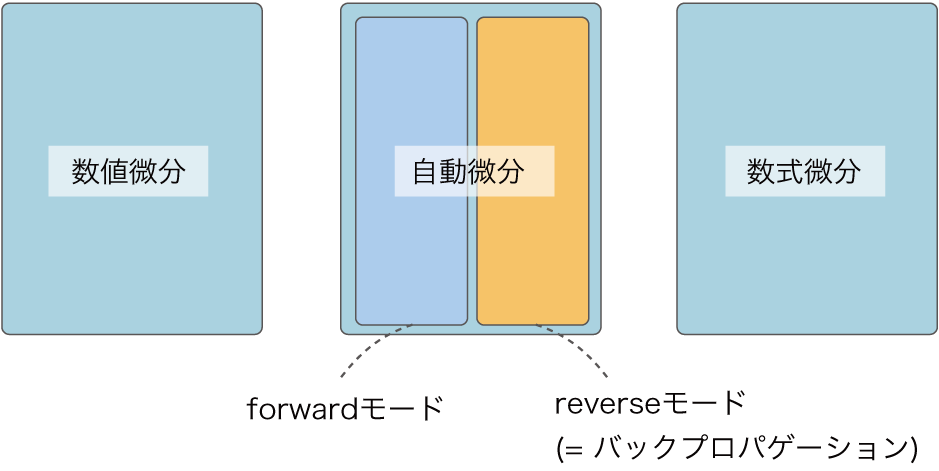

ディープラーニングのフレームワークで中心となる技術は、バックプロパゲーションです。バックプロパゲーションは、文献によっては「自動微分」と呼ばれることもあります。この「自動微分」という用語は――特にアカデミックの分野においては――、より限定的な手法を指すので注意が必要です。ここでは、自動微分という用語について補足します。
NOTE
自動微分は、文字どおり解釈すれば、「自動で微分を求める手法（技術）」ということになります。「自動で微分を求める」とは、（人ではなく）コンピュータが微分を求めることを指します。具体的には、ある計算（関数）をコーディングすれば、その計算の微分がコンピュータによって自動で求められるシステムを指します。
コンピュータのプログラムで微分を求める方法は、大きく3つに分けられます。1つ目の方法は、数値微分（numerical differentiation）です。これは「ステップ4」で実装したように、変数に対して微小な差異を与えて通常の計算（順伝播）を2回行います。そして、その出力の差から近似的に微分を求めます。数値微分は簡単に実装できますが、出力に誤差が含まれやすく、変数の多い関数を扱う場合の計算コストが高いという問題があります。
2つ目の方法は、数式微分（symbolic differentiation）です。これは、高校の数学で習ったような、微分の公式を用いて微分を求める方法です。あくまで、入力は「数式」であり、出力も「数式」です（数式は木構造のデータ形式で表せます）。この手法は、MathematicaやMATLABなどで用いられています。
WARNING
数式微分の出力は、微分された「式」――つまりは導関数――であり、その時点では数値計算は何も行われません。導関数を得た後で、具体的な値（たとえば、\(x=3.0\)）での微分を求めることができます。
数式微分の問題点は、数式が大きく膨れ上がりやすいことです。特に、最適化を考慮していない実装では、数式がすぐに巨大になります（まさしく、数式が“爆発”します）。また、ディープラーニングで扱うような計算では、大量の変数に対して（式ではなく）微分の「値」を効率的に求める必要があります。それには、よりふさわしい手法が求められます。
3つ目の方法は自動微分（automatic differentiation）です。これは、チェインルールを使って微分を求める方法です。何らかの関数をプログラムとして与えれば、その微分を効率良く、さらには精度良く求めることができます。バックプロパゲーションも、自動微分の1つに含まれます。より正確に言うと、自動微分は大きく2つに分けることができ、「forwardモード」と「reverseモード」があります。バックプロパゲーションは、後者の「reverseモードの自動微分」に相当します。
NOTE
バックプロパゲーション（reverseモードの自動微分）は、微分を出力側から入力側へと伝播しました。forwardモードの自動微分は、それとは逆に、微分を入力側から出力側へと伝播します。2つの手法はともにチェインルールを使って微分を求めますが、その“経路”が異なります。出力が1つで、その1つの出力変数の微分を求めたい場合は、reverseモードの自動微分が適しています。機械学習の多くの問題では、出力は1つの変数になるので、reverseモードの自動微分が使われます。本書では、forwardモードの自動微分について、これ以上の説明は行いません。forwardモードの自動微分について興味のある方は、文献[6][7]などが参考になります。
ここまでをまとめると、「コンピュータのプログラムで微分を求める手法」は図A-1のようになります。

図A-1 コンピュータのプログラムで微分を求める手法
図A-1で示すように「自動微分」とは、コンピュータで微分を求める手法のうちの1つの手法を指します。ディープラーニングのフレームワークは、その中の「reverseモードの自動微分」が実装されているという位置づけです。ただし文献によっては、forwardモードとreverseモードの区別はせずに、バックプロパゲーションを指して「自動微分」と呼ぶ場合も見られます。
NOTE
自動微分は、アカデミックの1つの分野として、長く研究されてきました。その歴史は古く、重要な知見も多く積み重なっています。しかし残念ながら、これまで機械学習の分野とは、さほど交流がありませんでした。最近では、ディープラーニングのブームを受けて、自動微分の分野への注目も高まっており、機械学習やプログラミング言語などの分野と自動微分の分野との新しい交流が始まっています。